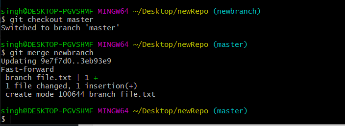

ls - Lista os arquivos no diretório atual; ● cd - Muda o diretório; ● pwd - Mostra o diretório de trabalho atual; ● mkdir - Cria um novo diretório; ● rm - Remove arquivos ou diretórios; ● cp - Copia arquivos ou diretórios; ● mv - Move ou renomeia arquivos ou diretórios; ● touch - Cria um novo arquivo vazio; ● cat - Exibe o conteúdo de um arquivo; ● nano ou vim - Editores de texto no terminal; ● grep - Procura por padrões em arquivos; ● ps - Lista processos em execução; ● kill - Encerra processos; ● chmod - Modifica as permissões de um arquivo; ● chown - Altera o proprietário de um arquivo ou diretório; ● df - Exibe o espaço em disco disponível; ● du - Mostra o uso de espaço em disco de um arquivo/diretório; ● man - Exibe o manual de um comando; ● history - Mostra histórico de comandos; ● echo - Exibe uma mensagem na saída padrão;
